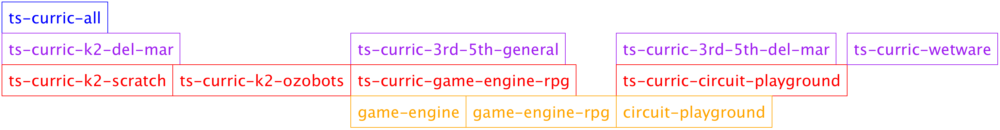

ts-curric-all
1 General
This repo lists as dependencies any curriculum we are currently intersted in. Installing this repo as a racket package should pull in all current curriculum. That, in turn, should pull in all langs and libraries that the curricula pertain to.
The intention is that installing ts-curric-all will install everything needed on a device that students are using.
The other intention is that it gives teachers and admins an easy way to access the curriculum materials they need: i.e. for editing, printing, review, making new curriculum based on existing curriculum, etc.
These docs will serve as generalized documentation on our curriculum organizational structure as a whole. Docs specific to any particular curriculum should go in those particular repos.
2 Printing
Printing of quest cards is a common task. Here’s a reasonably fast way to get printable sheets for the first quest, with enough duplicates for everyone enrolled in course 1225. This will propt you to choose a folder to save the images into. Then you can use whatever program your OS gives you for layout/printing/etc.
#lang racket (require ts-racket) (require ts-curric-common) (set-env! PROD) (require ts-curric-k2-del-mar) (save-out-materials "test" (printable-quest 1 (course 1225)))
3 Overall organization
There are 4 levels.
Top - just ts-curric-all. This should always be the one thing that needs to be installed to get all the curriculum. This level doesn’t need to provide anything. It’s info.rkt file is the only important thing.
Location-specific Curriculum. This levels modules should provide both quests, which returns a list of lists of images, and printable-quest which is a function that provides a list of images duplicated according to the number of students in a course.
Project-based Curriculum. This level should provide quests, a function that returns a list of quests. A quest is a list of curriculum materials. Curriculum materials can be raw images or picts. Or they can be marked as reusable-material or disposable-material to help manage how many to print for classes. Digital materials can be provided here too. The rule of thumb is to think of developing curriculum as a project-based-learning activity for one student. You can add things that are specific to multiple students in the next level up. See above.
Technology. This level is for underlying technologies, e.g. game-engine.
For users – e.g. students and teachers – they should only have to worry about installing ts-curric-all. For curriculum developers, you’ll need to make sure you’re providing the right things at the right levels
